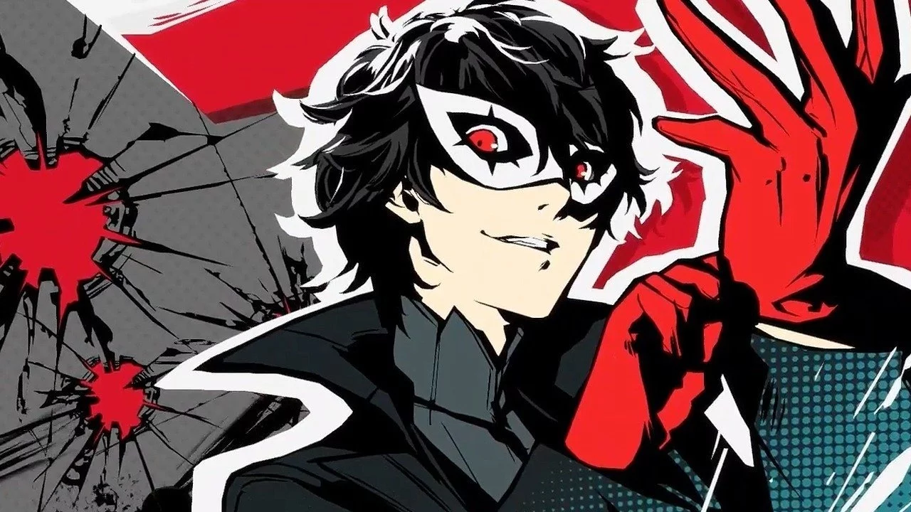

The newest patch fo Super Smash Bros. Ultimate comes with the new character Joker and a bunch of changes to other characters.
 =======In the new update for Super Smash Bros. Ultimate patch 3.0, a new character, stage, and many more new features were added to the game. The new character's name is Joker, and the stage is called Mementos. Both the new character and stage are from the game Persona and were popular votes for who should be in the game next. On the stage Mementos the base color of the stage is red but if you change the music the color will change to yellow or blue. The music tracks Nintendo has added to the game are from 3 different games, Persona 3, 4, and 5. These are the new music tracks they added: From Persona 5: Last Surprise, Beneath the Mask, Wake Up, Get Up, Get Out There, and Rivers In the Desert. From Persona 4: Reach Out To The Truth, I'll Face Myself, and Time To Make History. Finally from Persona 3: Mass Destruction, Battle Hymn of the Soul, and Aria of the Soul. If you change the music of the stage to one of the music tracks from Persona 3 or 4 the stage willl change to either blue or yellow. As for Joker, the music track for the stage can change what victory screen that you get. As for the other new features, Nintendo has added a missed feature from Super Smash Bros. for WiiU, Stage Builder! Players can now build their own stage in the game and play on it with their friends. Nintendo also added multiple Mii costumes which are Persona 3 Protagonist Wig + Outfit, Persona 4 Protagonist Wig + Outfit, Teddie Hat, Morgana Hat, Tails Hat + Outfit, and Knuckles Hat + Outfit. Nintendo also added a bunch of new spirits to the game, those spirits are Morgana, Ryuji Sakamoto, Ann Takamaki, Yusuke Kitagawa, Makoto Niijima, Futaba Sakura, Haru Okumura, Goro Akechi, Caroline & Justine, Igor, and Phantom Thieves of Hearts
>>>>>>> 1854e4e3a48d20533381d676a5821933d3ba02bb